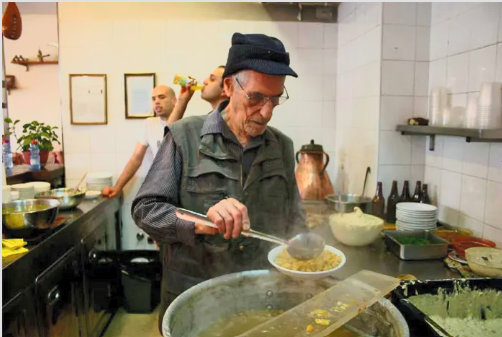
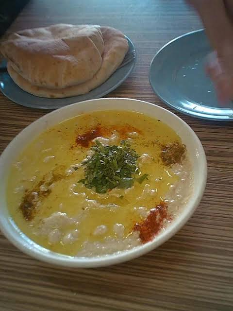

Big decisions. Small chickpeas.
Your lunch deserves a committee. Unfortunately, we made one.
In Memory Of Ali Karwan, Abu Hassan, The Greatest of them all

رحمه الله وأسكنه فسيح جناته
الفاتحة لروحه

Tell us your situation.
Be honest. The pita can tell.
Four layers. One lunch.
An unnecessarily transparent decision.
The Logistics MinisterLAYER 01 · LOCATION & HUNGER+
Can we get lunch without turning it into a pilgrimage? Same-city candidates get more points. Very hungry people give geography more voting power.
The Blog ArchaeologistLAYER 02 · SOURCE EVIDENCE+
Only restaurants covered by your selected sources enter the vote. Old reviews are evidence of an old visit, not proof of today's lunch.
The Seasonal PhilosopherLAYER 03 · DATE & APPETITE+
June through September: a lighter dip gets a bonus. December through February: rich hummus gets its moment. This is a playful preference rule, not nutrition advice.
Your Inner ChickpeaLAYER 04 · JEV'S FINAL CHOICE+
Jev reads the eligible reviews and your preferences, then chooses lunch. The visible points explain our rule baseline, not Jev's internal reasoning. The chickpeas declined an interview.
“We could just eat somewhere.”
Motion rejected. We have a
process.
Your next great dip.
A recommendation, not a religious ruling.
A plate full of possibility.
Give the council your brief.
We'll turn your preferences
into lunch, with an unreasonable amount of explanation.
Then I discovered committees.”AN ENTIRELY FICTIONAL SATISFIED CUSTOMER